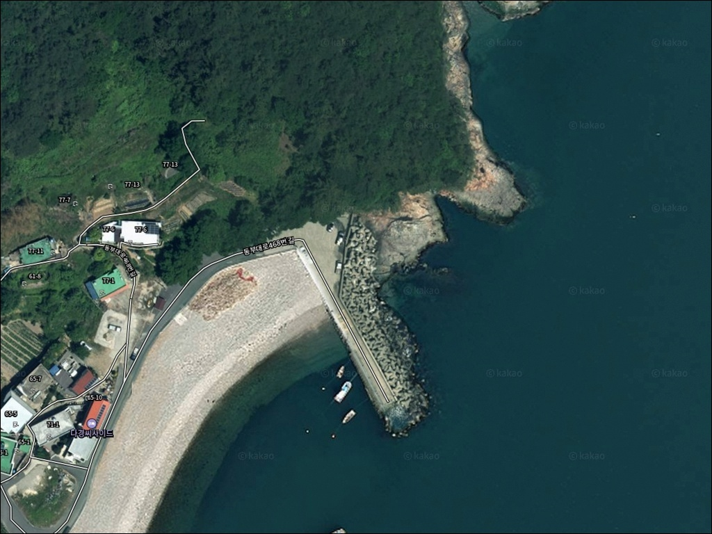
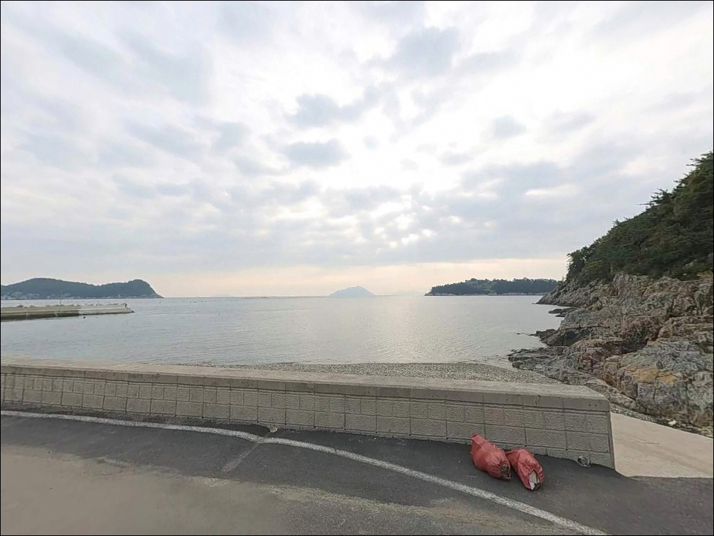
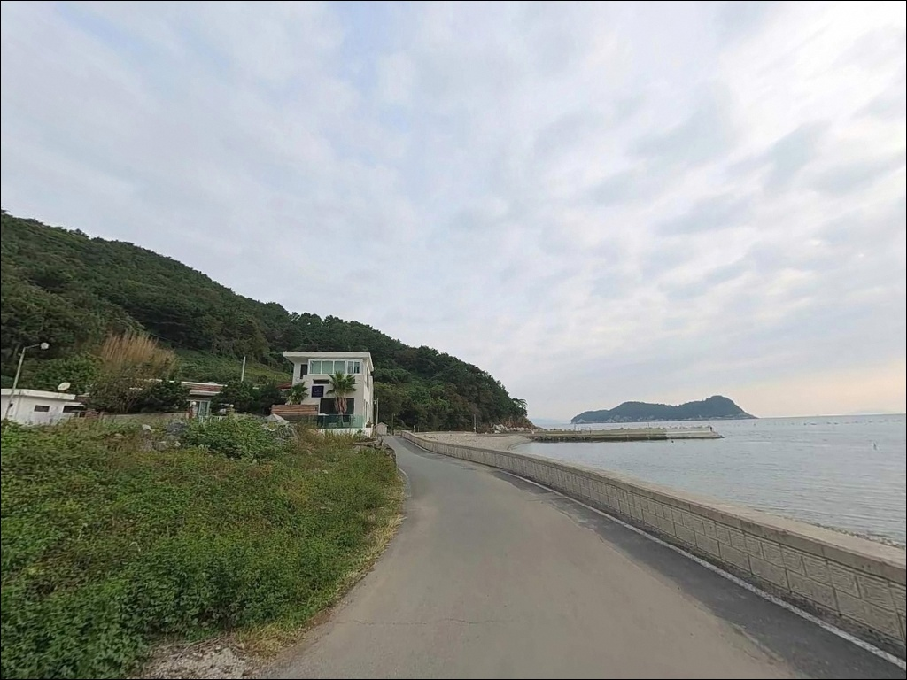
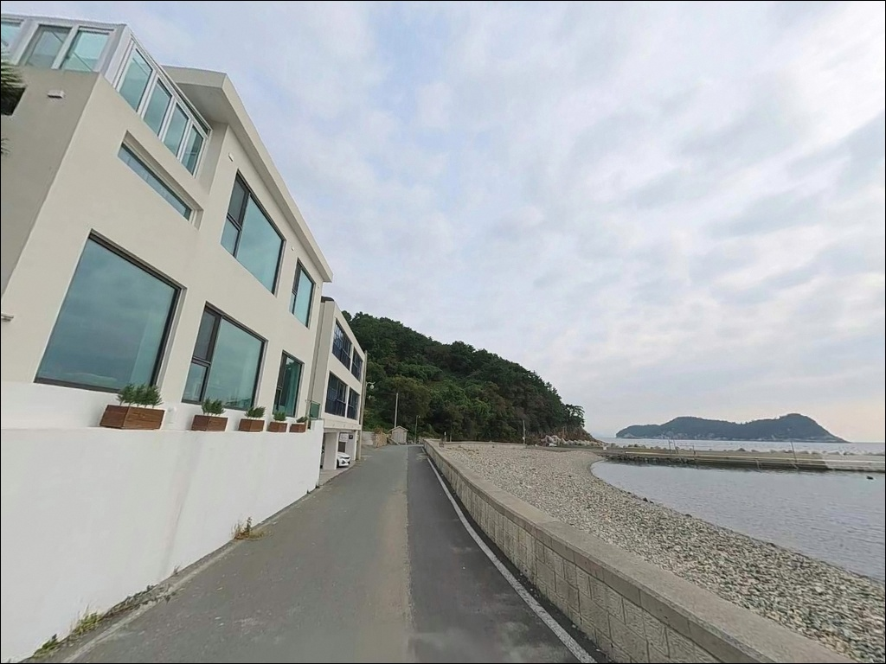
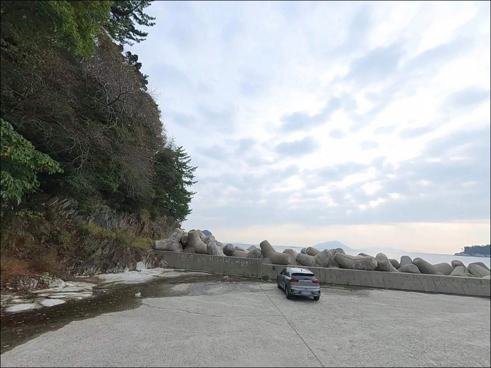
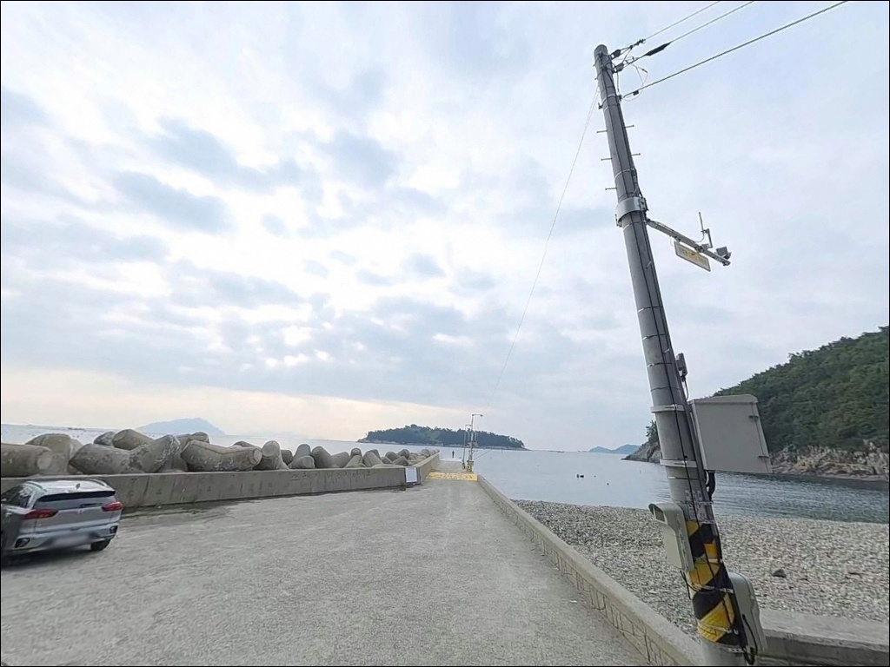
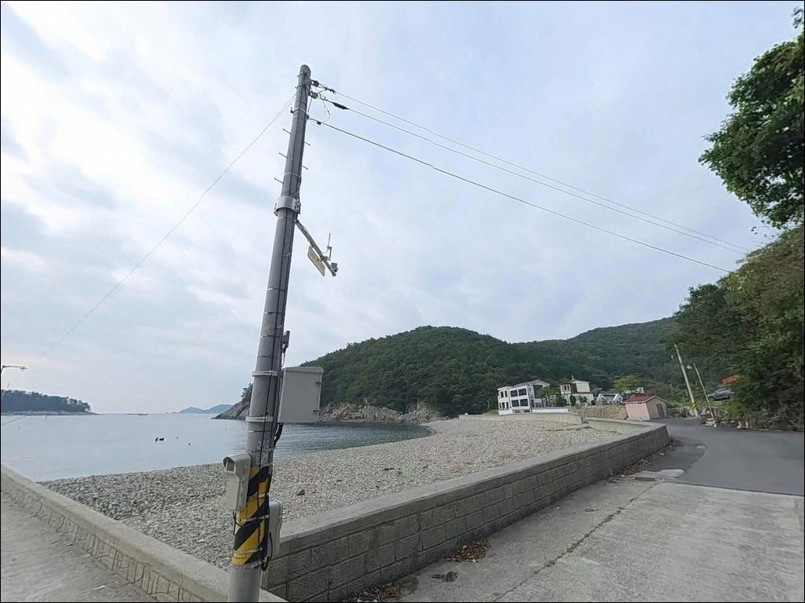
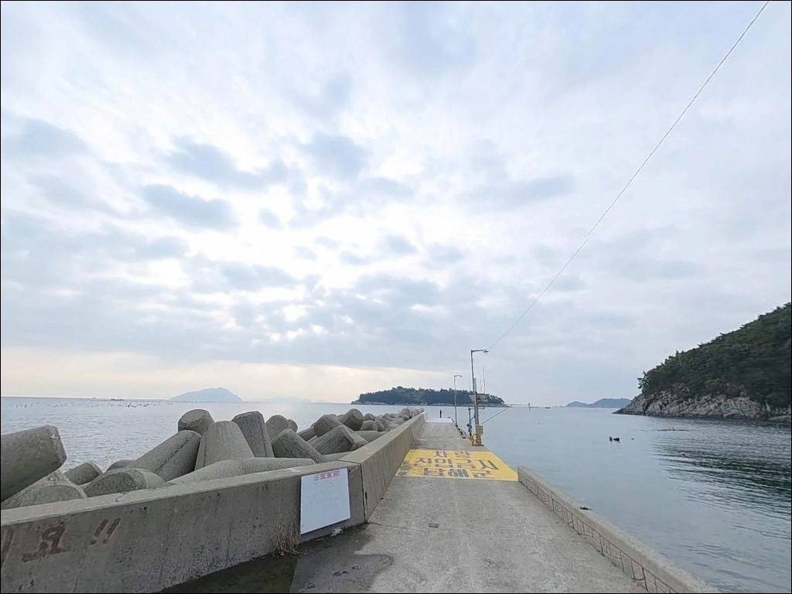
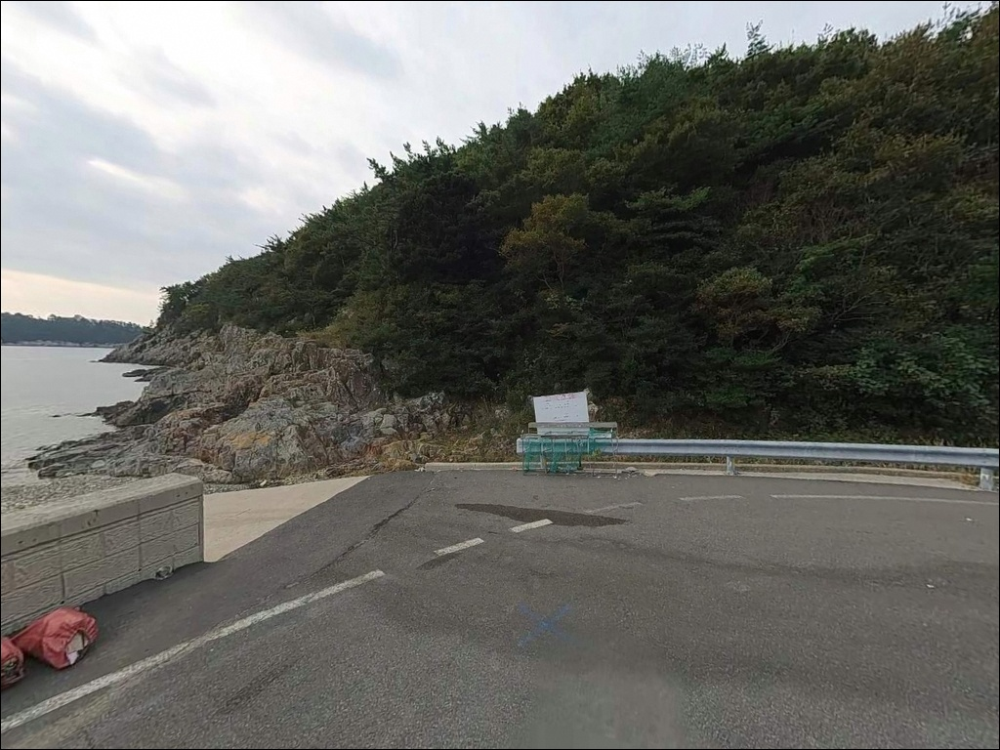

서풍 터져 낚시 묶일 때, 마안도가 바람 막아주는 남해 가인포방파제
이 페이지에는 광고(제휴 링크 포함)가 있으며, 광고 링크를 통해 구매하면 운영자가 판매 수익 또는 수수료를 받을 수 있습니다. 포인트 사진: 카카오맵 스카이뷰·로드뷰. 이 페이지의 지도·사진 이미지는 카카오맵의 실제 서비스 이미지와 다를 수 있습니다.


포인트 안내
가인포방파제
경남 남해군 미조면 송정리 산 36-9
바람이 강한 날, 미조 권역 방파제 대부분이
파도와 조류에 시달릴 때
가인포방파제는 오히려 낚시 자리가 살아나는
구조입니다.
마안도와 팥섬이 서쪽과 북서쪽 바람을
완전히 차단하는 지형 덕분에,
피난형 포인트로서의 역할을
이 방파제가 맡고 있습니다.
방파제 옆으로 갯바위 진입이 이어지는
이중 포인트 구조이며,
외항은 조류 소통이 원활하고
수심은 끝단 기준 5~8m를 유지합니다.
남해 미조 해역의 어종 구성이 풍부한 해역으로,
계절에 따라 공략 방식을 달리하면
다양한 스타일의 낚시가 가능한 포인트입니다.
이 글은 가인포방파제의 진입 환경,
지형 기반 낚시 여건, 차박 체류 조건에 집중합니다.
조황 단정이나 특정 어종 보장은
이 글의 범위에 포함되지 않습니다.

1. 진입 동선과 포인트 접근성
가인포방파제는 미조항에서 해안 소로를 따라
접근하는 구조입니다.
진주IC에서 남해고속도로를 타고
삼천포대교 → 77번 창선 → 3번 도로 미조항 방면으로
진입한 뒤, 송정리 방향으로 이어지면
가인포 마을에 닿습니다.
마을 내부 도로는 포장되어 있으나
마지막 진입 구간은 어촌 골목 수준의
폭이 좁은 소로로 연결됩니다.
일반 승용차와 중형 SUV는
진입에 큰 어려움이 없지만,
광폭 캠핑카나 대형 1톤 이상 차량은
출발 전 위성지도로 진입로를 확인하는 편이 안전합니다.
주차는 방파제 초입과 선착장 인근 공터를
이용하는 방식이 일반적입니다.
약 5~7대 수준의 소규모 공터이며,
주말에는 이른 시각에 자리를 선점해야
여유 있게 주차할 수 있습니다.
어선 하역 동선과 겹치지 않는 자리를
먼저 확인하는 것이 기본입니다.

2. 차박 환경과 야간 체류 여건
가인포 마을은 민가 밀집도가 낮은
소규모 어촌 분위기를 유지합니다.
야간 차량 통행이 거의 없어
소음 면에서는 조용한 환경이지만,
마을과 인접한 어항 특성상
완전한 프라이버시를 기대하기는 어렵습니다.
방파제 입구 쪽에 소수의 가로등이 있어
완전 암흑은 아닙니다.
끝단으로 갈수록 어두워지므로
야간 낚시에는 고성능 헤드랜턴이 필수이며,
볼락 라이트게임을 즐긴다면
집어등도 함께 준비해야 합니다.
인근 쏠비치 남해 리조트가 위치해
주변 조명이 일부 영향을 줄 수 있습니다.
차박은 '본격 캠핑'보다는
야간 낚시 후 간단히 쉬는 수준으로 접근하는 것이
이 포인트 구조에 맞습니다.
마을 주민 통행이 있는 어항 특성상
야간 소음 관리는 기본 매너입니다.


3. 주변 편의시설 및 인프라 현황
가인포 항구 내에는 상업 시설이 없습니다.
식수, 미끼, 낚시 소품은 출발 전에 갖추거나
약 3km 거리의 미조항 인근에서 해결해야 합니다.
미조항 일대에는 GS25 남해미조바다점(24시간)과
서남낚시·제일낚시가 운영 중이며,
출조 전 채비 보충에 가장 가까운 거점입니다.
미조항은 남해 남부 최대 규모의 항구로
수산물 직판장, 식당가, 농협하나로마트가
집중된 구역입니다.
가인포에서 차량으로 10분 이내 거리이므로
부족한 보급은 이 동선을 활용하면
해결이 됩니다.
응급 상황 발생 시 미조면 보건지소가
미조항 인근에 있으며,
남해군 보건의료원은 남해읍 방향으로
약 20~25km 거리입니다.
출발 전 연료와 비상약품은
사전 준비를 기본으로 해야 합니다.

4. 진입 전 반드시 챙겨야 할 준비사항
가인포방파제 방문 전에 먼저 확인해야 할 것은
물때입니다.
외항 조류가 받쳐줄 때와 그렇지 않을 때의
낚시 여건 차이가 크게 나는 구조이며,
바다타임에서 미조면 기준 물때를 확인한 뒤
조류가 살아 있는 타이밍에 맞춰
입장 시각을 설정하는 것이 기본 전략입니다.
남해 해역은 기상 변화가 빠른 편입니다.
기상청 예보와 해양경찰청 안전포털에서
풍속·파고·기상 특보를 출조 전날과
당일 아침 두 차례 확인하는 것이
헛걸음을 막는 조건입니다.
방파제 입구 테트라포드 구간은
이끼와 경사로 인해 미끄럼 위험이 있습니다.
갯바위 진입 시에는 스파이크화를 착용하고,
방파제·갯바위 낚시 모두
구명조끼 착용을 기본으로 합니다.
너울성 파도 예보가 있는 날에는
진입 자체를 재검토해야 합니다.

5. 지형 기반 낚시 여건 분석
가인포방파제의 핵심 구조는
방파제(B포인트)와 갯바위(A포인트)가
나란히 붙어 있는 이중 포인트입니다.
2002년 어촌정주어항으로 지정된 소형 항만으로,
방파제 길이 78m·폭 6m, 호안 137m를
공식 시설로 갖추고 있습니다.
방파제 정면에는 2시 방향 마안도,
5시 방향 팥섬이 자리하고 있습니다.
두 섬 사이 수로 구간에서 조류 흐름이 발생하는
남해 다도해 전형 구조로,
외항 끝단 수심은 5~8m 수준이며
조류가 방파제를 스치듯 흐르는 타이밍이
찌낚시와 에깅 모두에서 핵심 조건이 됩니다.
갯바위 구간은 방파제 옆으로 진입하는 구조이며,
정면에 수중여와 홈통이 교차하는 지형입니다.
릴찌낚시로 조류에 채비를 태우기에 적합한 구조이고,
홈통 구간은 근거리 볼락 구멍치기에도
대응할 수 있습니다.
방파제와 갯바위를 오가며 공략하는 방식이
이 포인트를 효율적으로 활용하는 방법입니다.
출조 전에는 '가인포 방파제 조황',
'미조 가인포 갯바위 낚시',
'미조면 조황' 등의 키워드로
최신 조황을 반드시 확인하시기 바랍니다.


6. 조류가 받쳐줄 때 달라지는 낚시 스타일
가인포의 지형 조건에 가장 잘 맞는 방식은
릴찌낚시입니다.
외항 방향으로 채비를 날려
마안도·팥섬 사이 수로에서 형성되는 조류에
태우는 방식으로,
가을에서 초겨울 사이가
감성돔·벵에돔 계열 어종을 기대해볼 수 있는
시즌 중심입니다.
에깅도 이 포인트 구조와 잘 맞습니다.
방파제 끝단과 외항 방향으로 에기를 멀리 캐스팅해
바닥층을 훑는 방식이 이 지형에 어울리며,
가을이 무늬오징어·갑오징어 에깅의
중심 시즌입니다.
마안도·팥섬 방향으로 트인 외해측을
집중 공략하는 것이 기본입니다.
야간에는 볼락 라이트게임이 어울립니다.
테트라포드 외항 구간과 내항 석축 경계면,
갯바위 홈통 주변이
볼락이 서식하기 좋은 구조를 갖추고 있습니다.
소형 지그헤드 채비에 집어등을 병행하면
내항 석축 근거리에서 마릿수를
기대해볼 수 있는 편입니다.
내항 방향 원투낚시는
붕장어·도다리를 기대해볼 수 있는 구조이며,
조류가 잔잔해지는 타이밍에
바닥 어종을 노리는 방식으로 활용하면 됩니다.
외항 쪽은 밑걸림이 심한 편이므로
여분 채비를 넉넉히 준비하는 것이
기본 조건입니다.

7. 대안 포인트와 플랜 B 동선
가인포방파제 자리가 여의치 않거나
조류 조건이 맞지 않는다면,
같은 송정리 해안선 상의
노구방파제(약 1~2km)가 첫 번째 대안입니다.
대형 방파제 구조에 테트라포드가 설치되어 있고
볼락 마릿수 포인트로 알려진 곳이라
가인포와 함께 동선으로 묶기 좋습니다.
미조북항 방파제는 약 3km 거리의
강력한 플랜B입니다.
감성돔·벵에돔·볼락·무늬오징어·갈치 등
계절별 어종이 다양하고,
주변에 낚시점과 편의점이 밀집해 있어
보급과 낚시를 동시에 해결할 수 있는
거점 포인트 역할을 합니다.
항도방파제도 약 2~3km 거리로
깊은 수심과 암초 구간을 갖춘 포인트입니다.
가인포, 노구, 미조북항, 항도방파제를
해안선 순서로 묶으면
하루 동선에 4개 포인트를
탐색할 수 있는 구성이 됩니다.

바람 막히는 날,
가인포방파제가 진가를 발휘합니다
릴찌낚시나 에깅, 볼락 라이트게임을
즐기는 낚시인이라면
가인포방파제의 이중 포인트 구조는
잘 맞는 지형입니다.
방파제와 갯바위를 상황에 따라 오가며
공략할 수 있고,
마안도·팥섬이 서풍을 막아주는 덕분에
기상이 나쁜 날에도 낚시 여건이
유지되는 경우가 많습니다.
다만 주차 공간이 5~7대 수준으로 제한적이고,
방파제 끝단 테트라포드 구간은
야간 이동에 주의가 필요합니다.
물때 확인, 조명 장비 준비, 진입로 사전 확인,
이 세 가지를 갖추고 방문하면
미조 권역의 조용한 알짜 포인트로
기억될 수 있는 곳입니다.
차박은 본격 캠핑보다는
야간 낚시 후 간단히 차 안에서 쉬는
방식으로 접근하는 것이 현실적입니다.
낚시를 마치고 미조항 수산물 직판장에서
저녁을 해결하는 동선까지 더하면
가인포 출조가 한결 알차게 마무리됩니다.